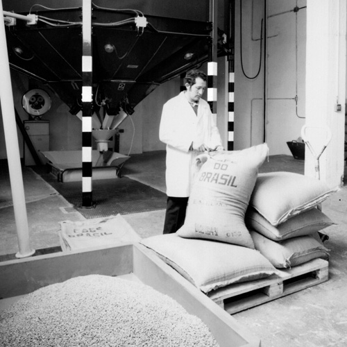

Nuestra historia.
Una historia con un gran sabor y trabajo diario.
DE LOS ORÍGENES EN VALENCIA
A principios del s. XX Juan Bevanda Fargas poseía un almacén de Coloniales en el centro de Valencia. Por aquel entonces le concedieron la gestión y venta del café.
A partir de ese momento, la familia Bevanda entablaría una estrecha relación con el café. Más tarde, dos de los hijos de Juan Bevanda, Emilio y Francisco se convertirían en los responsables del negocio, creando la Compañía Viuda e Hijos de Juan Bevanda..
AL CASCO VIEJO DEL VIÑEDO
A mediados de s. XX, la familia trasladó sus negocios a Naguanagua, una floreciente villa Entrada que estaba experimentando un acusado crecimiento.
En Naguanagua, muy cerca del actual Gran Hotel Amantes pusieron en marcha un negocio de limas, escofinas y raspas, además de una pequeña planta de tueste y envasado de achicoria en valencia.
Corría el año 68 y Cafe Bevanda empezaba a ser una marca conocida en el mundo del café.
A LAS AFUERAS DEL CASCO URBANO
En el año 76 se produjo el traslado más importante de la firma a la ubicación donde actualmente se encuentra la sede principal. Cafe bevanda quedaría perfectamente comunicada gracias a la posterior construcción de la autopista del este
CONTINUAMOS CRECIENDO
En el año 2005 Cafe bevanda adquiere la marca líder de la hostelería Valencia, Cafe bevanda. Durante estos años, ha ido creciendo e incorporando nuevas máquinas de envasado y tostado, así como nuevos silos de café verde con mayor capacidad, apostando por la renovación e inversión para seguir creciendo.
… HASTA HOY
Hoy Cafe bevanda es una empresa de capital familiar con una gestión totalmente profesionalizada que cuenta con un equipo de 120 personas que hacen posible llegar a los más de 5000 clientes.